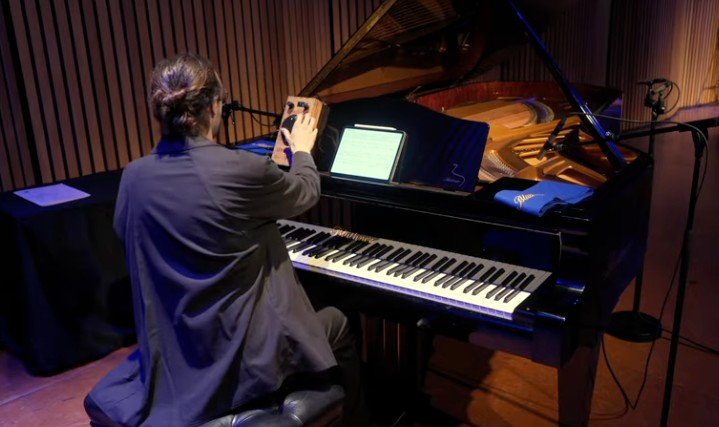

Chirality: a form and its mirror image, which cannot be superimposed on itQuiralidad: una forma y su imagen especular no superponible
Chiral is a work in twelve movements for two pianos and two ring modulators. Chirality, the property of a form that cannot be superimposed on its mirror image, as a left hand cannot be superimposed on a right hand, is its compositional premise.
The electronic setup follows the one Stockhausen devised for Mantra (1970), in which the sound of each piano passes through its own ring modulator. The modulators were designed and built at UC by a research team led by the composer from the study of the MODUL 69 B built for Mantra: analog processing with precise digital control, portable and reproducible. The research was presented at the International Computer Music Conference 2024 in Seoul and at the IRCAM Forum 2025 in Paris; the piece would not exist without it.
Chiral es una obra en doce movimientos para dos pianos y dos moduladores en anillo. La quiralidad, propiedad de una forma que no puede superponerse a su imagen especular, como una mano izquierda no puede superponerse a una derecha, es su premisa compositiva.
La electrónica sigue el dispositivo que Stockhausen concibió para Mantra (1970), en que el sonido de cada piano pasa por su propio modulador en anillo. Los moduladores fueron diseñados y construidos en la UC por un equipo de investigación dirigido por el compositor a partir del estudio del MODUL 69 B construido para Mantra: procesamiento analógico con control digital preciso, portátil y reproducible. La investigación se presentó en la International Computer Music Conference 2024 en Seúl y en el IRCAM Forum 2025 en París; la obra no existiría sin ella.